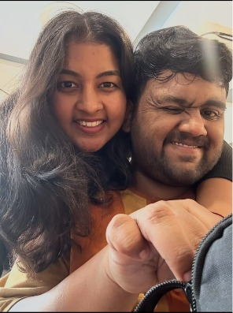

I love how we can turn ordinary days into memories.
A little something, just for you
Happy Boyfriend’s Day 💜
A little something for my favorite person.
Open these gifts and wander through a few of my favorite memories with you.
Made with love, for you
Your little collection
Choose a gift
Each one holds a piece of us.
Gift one · the beginning
Where It All Began
Every story has a beginning.
This is ours.


Gift two · the everyday magic
Our Little Moments
The ordinary days have a way
of becoming my favorites.




Gift three · a few little reasons
Things I Love About Us
Some things are small enough to miss,
but too lovely not to say.
I love the little moments that nobody else gets to see.
I love having someone who makes life feel a little lighter.


Gift four · saved for last
One More Thing...
And after all these memories...